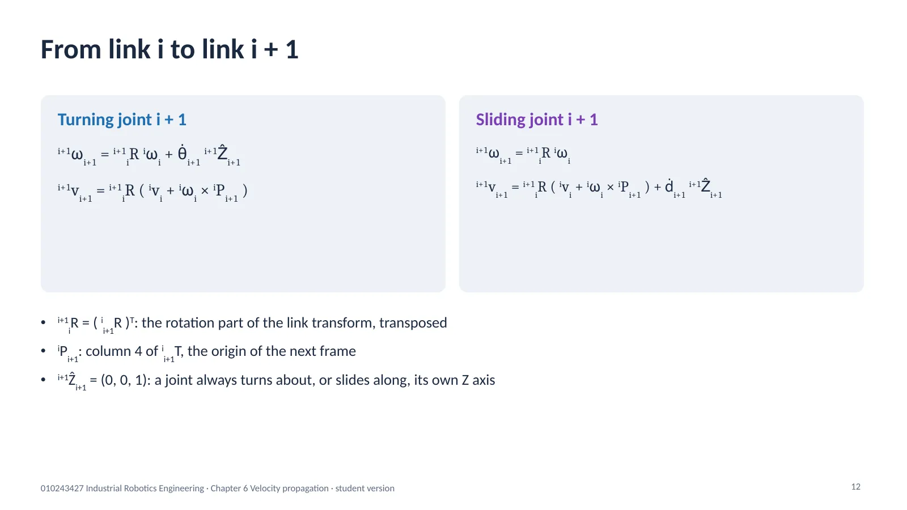
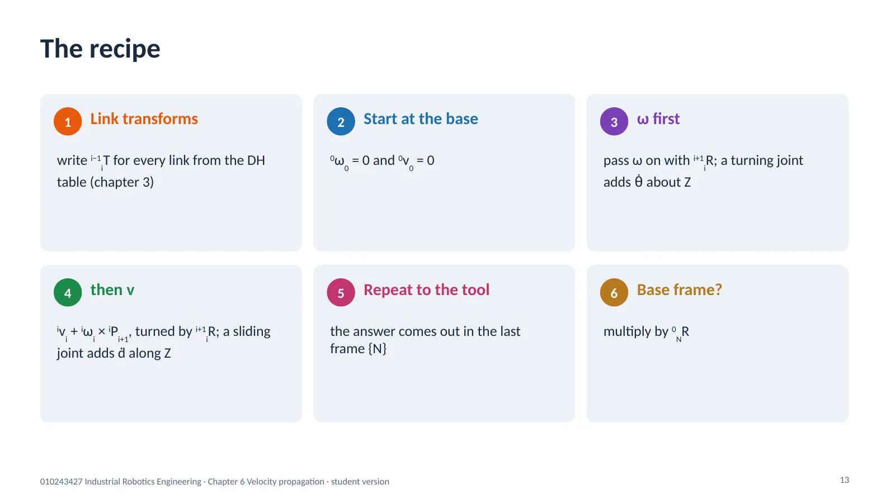
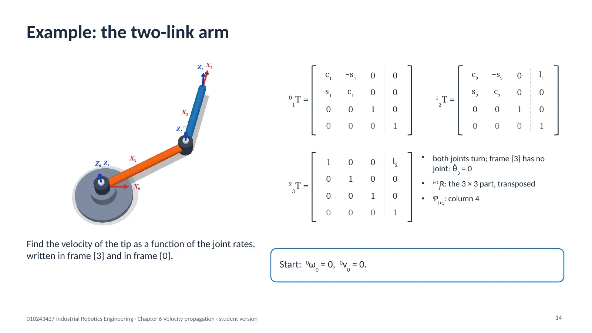
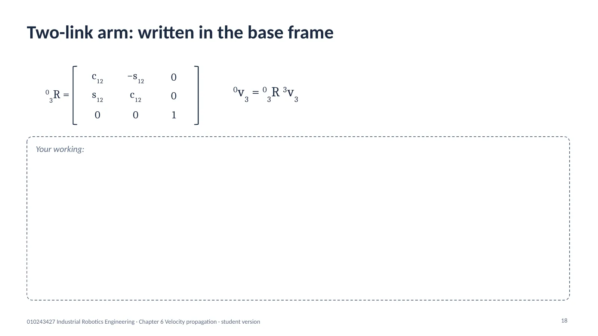
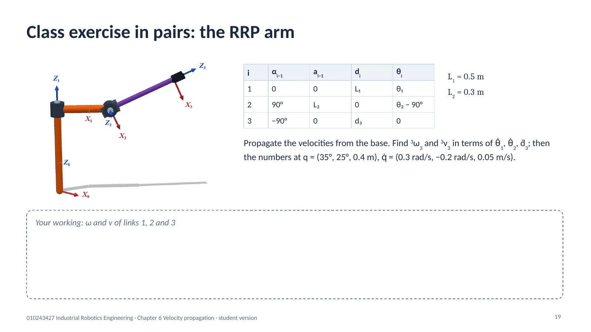

ความเร็วของก้าน i บอกได้ด้วยเวกเตอร์สองตัว: \(v_i\) คือความเร็วเชิงเส้นของจุดกำเนิดเฟรม {i} และ \(\omega_i\) คือความเร็วเชิงมุมของก้าน ทั้งสองวัดเทียบกับฐานที่อยู่นิ่ง แต่เขียนตัวเลขในเฟรมของก้านนั้นเอง: \({}^iv_i\) และ \({}^i\omega_i\) หลักคิดมีเพียงข้อเดียว: ก้าน i + 1 มีความเร็วของก้าน i บวกกับสิ่งที่ข้อต่อ i + 1 เพิ่มให้ จึงเริ่มที่ฐานซึ่งความเร็วเป็นศูนย์ทั้งสองตัว แล้วเดินขึ้นไปทีละก้านจนถึงปลายแขน วิธีนี้ไม่ต้องหาอนุพันธ์เลย ใช้เพียงเมทริกซ์การแปลงของก้านจากบทที่ 3 กับผลคูณไขว้ หัวข้อนี้ผิดกันบ่อยในการสอบ หน้านี้จึงเดินทีละขั้นเล็ก ๆ ครอบคลุมสไลด์หน้า 11–19 มี เครื่องมือ 1 ชิ้น (A) และ 3 โจทย์
The velocity of link i is two vectors: \(v_i\), the linear velocity of the origin of frame {i}, and \(\omega_i\), the angular velocity of the link. Both are measured against the fixed base, but their numbers are written in the link's own frame: \({}^iv_i\) and \({}^i\omega_i\). There is one idea only: link i + 1 has the velocity of link i plus what joint i + 1 adds. So we start at the base, where both velocities are zero, and walk up the arm one link at a time until we reach the tool. Nothing is differentiated: all it takes is the link transforms of chapter 3 and a cross product. This topic often goes wrong in exams, so this page takes small steps. It covers slides pp. 11–19, with one tool (A) and 3 problems.

สไลด์นี้คือวิธีทำทั้งหมดของหน้านี้ ย่อเหลือ 6 ขั้น ก่อนลงมือคำนวณ ลองดูให้เห็นภาพก่อน กดปุ่ม ถึงเฟรม {1}, {2}, {3} ตามลำดับ: ความเร็วของแต่ละเฟรมสร้างต่อจากเฟรมก่อนหน้าเสมอ
แล้วลองสองกรณีนี้ (ก) ตั้ง θ̇₂ = 0 เลื่อนเฉพาะ θ̇₁: ทั้งแขนหมุนเป็นชิ้นเดียว ω₂ = ω₁ และ v โตตามระยะจากฐาน (ข) ตั้ง θ̇₁ = 0 เลื่อนเฉพาะ θ̇₂: ก้าน 1 อยู่นิ่ง ข้อศอกจึงไม่มีความเร็ว (v₂ = 0) เหลือแต่ปลายแขนที่วิ่งตั้งฉากกับก้าน 2 สุดท้ายเลื่อน θ₁: รูปหมุนไปทั้งแขน แต่ตัวเลขในตารางไม่เปลี่ยนเลย เพราะเขียนในเฟรมที่ติดไปกับก้าน
This slide is the whole method of this page in six steps. Before any calculation, get the picture: press up to frame {1}, {2}, {3} in turn. The velocity of each frame is always built on that of the frame before.
Then try two cases. (a) Set θ̇₂ = 0 and move only θ̇₁: the whole arm turns as one piece, ω₂ = ω₁, and v grows with the distance from the base. (b) Set θ̇₁ = 0 and move only θ̇₂: link 1 stands still, so the elbow has no velocity (v₂ = 0) and only the tip moves, square to link 2. Last, move θ₁: the whole picture turns, but the numbers in the table do not change at all, because they are written in frames that ride on the links.



(ก) องค์ประกอบ x, y, z ของ \({}^3v_3\) เป็น m/s
(a) The x, y, z components of \({}^3v_3\) in m/s
(ข) องค์ประกอบ x, y, z ของ \({}^3\omega_3\) เป็น rad/s
(b) The x, y, z components of \({}^3\omega_3\) in rad/s